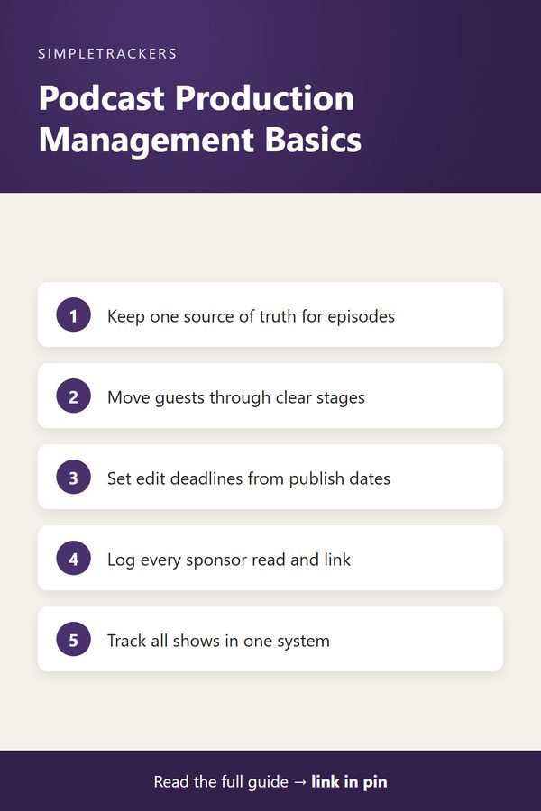

The Complete Guide to Podcast Episode & Production Management

Key takeaways
- The foundation: a single source of truth for episode data creates visibility, prevents missed deadlines and scales your operation.
- Guests: run every guest through five stages, from outreach to completion, with the data for each stage in one place.
- Timelines: set editing, show notes and sponsor deadlines from your publish date so no step falls through the cracks.
- Revenue and scale: track sponsor spots and affiliate links per episode, and keep multiple shows in one system.
Managing Podcast Episodes, Guests, and Production Timelines
Running a podcast looks deceptively simple from the outside: record, edit, publish, repeat. But anyone producing more than a few episodes quickly discovers the operational complexity beneath. The moving parts multiply fast:
- Juggling guest schedules
- Tracking recording dates
- Managing sponsorship commitments
- Coordinating with co-hosts or team members
- Making sure episodes actually publish before deadlines
Without a systematic way to manage these pieces, your production pipeline becomes a guessing game played across email threads, calendar invites, and hastily written notes.
This guide brings together everything you need to know about tracking your podcast production effectively. Whether you're starting your first show or managing several at once, these resources walk you through the why, the how, and the practical details of an operational system that works.
The core idea
A single source of truth for episode data creates visibility, prevents missed deadlines, scales your operation, and turns podcast production from chaos into a manageable workflow.
Why Episode Tracking Changes Everything
Before diving into systems and spreadsheets, it's worth understanding the real problem that tracking solves. Why Episode Tracking Matters: The Real Cost of Disorganized Podcast Production explores the cascade of costs that come from managing episodes through scattered sources.
When episodes live in email, Slack, Google Docs, and notes apps, real expenses accumulate:
- Lost time searching for confirmation emails
- Lost revenue from untracked sponsorship deals
- Damaged audience trust from missed publish dates
- A ceiling on growth: scaling to multiple shows becomes nearly impossible
The post explains what changes when you move from ad-hoc chaos to a structured system. The clarity it creates for both your operation and your sponsors is genuinely powerful.
A Guest Coordination Workflow That Scales
Managing guest appearances is a multi-step process that fails quickly without structure. Guest Coordination Workflow: From Outreach to Publication walks you through the five stages of guest management:
- Outreach. Invite the guest and note why.
- Confirmation. Know which guests have actually said yes.
- Preparation. Track which prep materials went out, and when.
- Recording. Lock the date and time.
- Completion. Close out the appearance after publishing.
When you're juggling eight or ten active guest conversations, email threads become impossible to search. The post shows you how to structure guest data so you can answer "did this guest confirm?" or "what prep materials did we send?" in seconds. You'll learn how structure prevents double-bookings, enables professional follow-ups, and makes guest coordination scale smoothly.
Mapping Your Production Timeline
Episodes don't move linearly from recording to publication. They branch into editing sessions, show notes writing, sponsorship confirmation, promotion planning, and publication verification, all with their own deadlines.
Production Timeline: From Recording to Publish breaks down the full production lifecycle and shows you how to structure timelines so no step falls through the cracks. You'll learn:
- How to set editing deadlines based on your typical editing duration
- How to coordinate show notes with publication dates
- When sponsorship details need to be locked in
- How to verify successful publication
Tracking these milestones prevents the last-minute scramble where episodes miss their publish window or go live with incomplete details.
Learning to Use Your Tracker Effectively
Once you have a tracking system in place, it helps to understand exactly what each column is for and how to use it daily. How to Use the Tracker: A Column-by-Column Guide provides a detailed walkthrough of the Podcast Producer & Episode Management Tracker.
You'll see real examples of workflow entries and the purpose of each column, from episode number and title through recording date, editing deadline, and publish status. You'll also learn how to structure your day around the tracker so it becomes your single source of truth.
The weekly rhythm
The post also covers the daily workflow that keeps your pipeline flowing: Monday review, mid-week confirmations, deadline checks, and publication verification.

Tracking Sponsorships and Affiliate Deals
Revenue tracking is often the forgotten piece of podcast operations. Sponsorship and Affiliate Tracking: Proving ROI to Your Partners shows you how to track which episodes have paid sponsorships, which affiliate links were included, and when promotions actually aired.
Without this data, you can't answer a sponsor's question about fulfillment or demonstrate value to potential partners. The post explains how to structure sponsorship tracking so you can:
- Prove that deals were honored
- Answer questions about listener exposure immediately
- Spot patterns in which episodes drive affiliate conversions
Managing Multiple Shows Without Doubling Your Workload
Scaling from one podcast to two or three creates a whole new set of coordination challenges. Managing Multiple Shows: Scaling Your Operation Without Doubling Work addresses how a single tracking system can manage episodes, guests, and timelines across multiple shows at once. You'll learn how to:
- Organize data by show
- Coordinate recording sessions across shows to batch work efficiently
- Manage guests who appear on multiple shows
- Keep each show's publication schedule on track without collisions
This post is essential if you're running parallel podcasts or planning to expand beyond your first show.
Answers to Questions You Didn't Know You Had
As you start tracking, practical questions come up quickly. What if you miss several days of updates? Can you track effectively if you work a full-time job? How detailed should episode notes be?
Episode Tracking FAQ: Common Questions About Using Your Tracker addresses the most frequently asked questions from actual podcast producers. You'll find reassuring answers that make tracking feel achievable rather than overwhelming. Many producers find their worries about doing it right dissolve once they understand what the tracker actually requires and how flexible it can be.
Ready to Start or Improve Your Operation
Tracking your podcast episodes and production workflow transforms the way you manage your show:
| Instead of... | You have... |
|---|---|
| Relying on memory and email searches | Actual data |
| Worrying about missed deadlines | Visibility weeks in advance |
| Scrambling to answer sponsor questions | Proof of fulfillment ready to share |
This guide provides the framework and knowledge you need to build an operational system that works for your show and your workflow.
Tools That Keep Your Production Organized
Tracking tells you what's happening across your episodes, but sometimes the fix is a better workflow tool. Podcast Production Essentials: Tools That Keep Your Operation Organized rounds up practical products (planning notebooks, guest coordination tools, sponsor document organization, workspace setup) that make daily production management easier to run and easier to track. Pair it with your tracking practice to see what actually changes.
A Stage-by-Stage Episode Checklist
Every episode moves through the same stages, but relying on memory means something eventually slips. The Complete Podcast Episode Checklist: Idea to Publish walks through all five stages: pre-recording prep, recording day, post-production, publishing, and post-launch follow-up. It explains why a checklist only holds up when each episode's stage is tracked in one place rather than scattered across notes and inboxes.
Choosing a Release Schedule You Can Keep
Frequency is one of the first decisions every podcaster gets wrong. How Often Should You Publish a Podcast? Finding a Sustainable Release Schedule walks through why consistency beats raw frequency. It shows how to use your own production data to pick a cadence (weekly, biweekly, or monthly) that holds up over time instead of burning you out in a few months.
How Many Episodes Should You Keep Recorded Ahead?
Even with a good schedule and a solid checklist, one cancelled guest or one sick week can still throw off your publish date. How Many Episodes Should You Record Ahead? Building a Podcast Buffer covers how large a buffer of ready-to-publish episodes to keep, and how to build one without burning out.
When a Guest Cancels or Doesn't Show Up
Sooner or later a guest will cancel at the last minute or simply not join the call. What to Do When a Podcast Guest Cancels or No-Shows covers how to protect your publish date, reschedule without losing the guest, and cut down on future cancellations.
To get started with a ready-to-use tracking system that handles the structure and format for you, download the Podcast Producer & Episode Management Tracker today. The spreadsheet comes pre-formatted with all the columns you need for daily logging, includes example entries showing exactly how consistent tracking looks in practice, and is designed to scale from one podcast to multiple shows. Combined with the resources in this guide, you'll have everything you need to transform your podcast operation from chaotic to organized and professional.